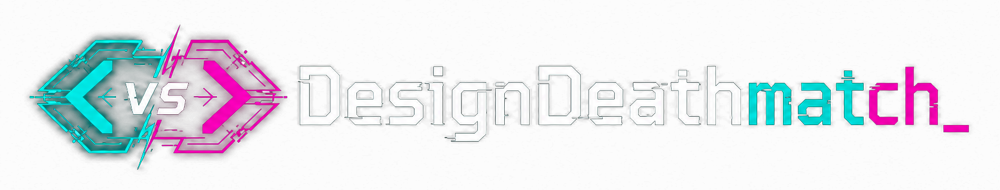

Does the result demonstrate genuine aesthetic judgment, or just generic technical execution?
Do tokens, logo, site, and style guide all feel like they belong to the same visual system?
Did the model take risks or interpret the brief in an interesting, non-obvious way?
Quality of the code, complexity of animations, and robustness of the responsive implementation.
Note: This will open a new GitHub Issue with your score data. Once submitted, it will be automatically processed.